泰国珍寺修行、スタート地はバンコクである。
タイは比較的出版事情がよいので、バンコクに入ったらまず本屋をチェックすることにしている。紀伊国屋、東京堂、アジアブックス、ＢＯＯＫＡＺＩＮＥなどといった定番書店に加えて今回はダブルＡという大型書店に行ってみることにした。
で、その本屋に向かう道中見かけた光景に早くも予定変更。本屋そっちのけの凄い光景が出現。
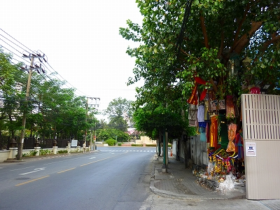
最初は木陰で何かを売っているのか、と思ったらそうではないようだ。
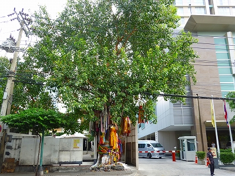
大きな樹木に何かぶら下がっているではないか。
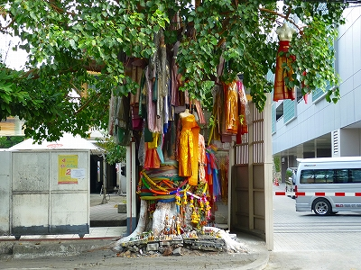
タイには聖なる木、とでも言うのだろうか、ある特定の木にプアンマライと呼ばれる花輪や布を掲げて大相賑やかなのだが、ここのはそれともチト様子が違う。
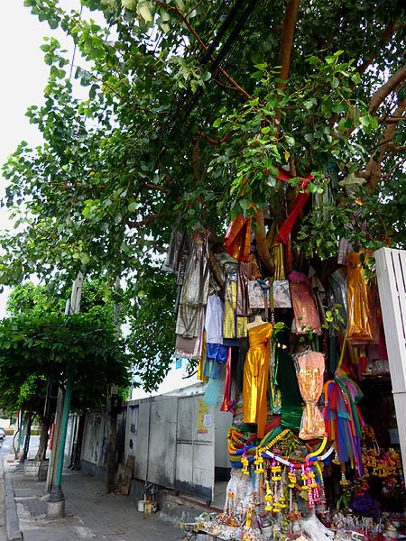
色とりどりのドレスが木から吊るされているのである。
これは何だ？
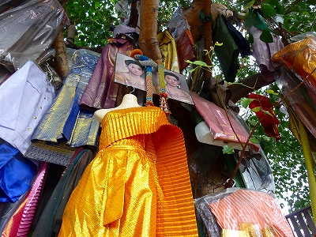 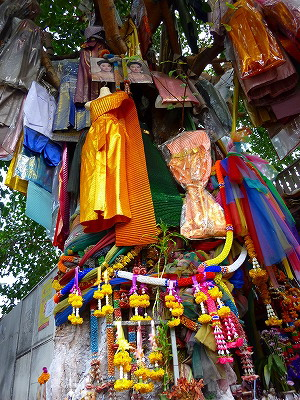
おおお、これはもしや奉納されているのか？
樹上には女性の肖像画が架かっている。
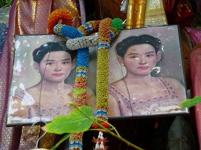
これはナーン・ナークというバンコク郊外に伝わる実際に起こったとされる事件から成る民間信仰の神様と思われる。
時は19世紀の話。若くして死んだ女性が夫恋しさのあまり幽霊となってオンヌットの村に災いをもたらしたという。
この話は悲哀譚としてバンコクの人にとっては馴染み深い話で、度々映画の題材にもなっているとか。
日本で例えればお岩さんを神様として祀っているようなものだろう。
タイにおいて幽霊はピーと呼ばれ、日本のそれよりもよりはっきりとした認識でひとつの信仰のカタチを持っている。
精霊信仰はタイの民衆宗教の基幹であるといっても過言ではない。
そんな精霊（幽霊）信仰と有名な幽霊譚がミックスして生まれたナーン・ナーク信仰、女性の霊を慰めるためきらびやかなドレスを奉納するのだろう。
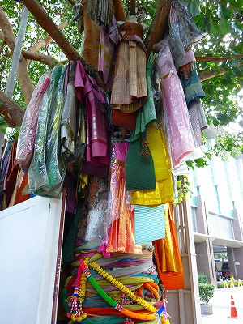 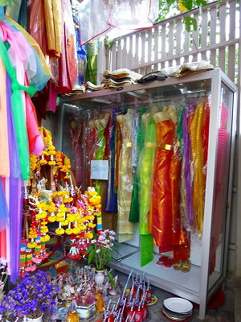
ちょっとしたウィークエンドマーケットの服の屋台みたいな雰囲気になっている。
また高いドレスなのだろうか、ガラスケースに納まっているドレスもあってますます服屋みたい。
足元に目をやればコンクリで固められた根元には様々な奉納物が並んでいる。
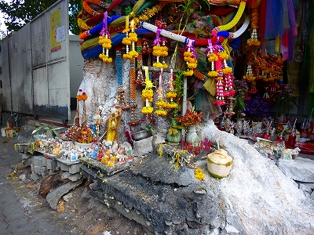
その脇には小さな祠があるが、プアンマライがかけ放題かけてあるためカタチすらよく判らない。
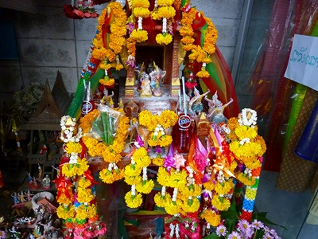
奉納されてるジュース。
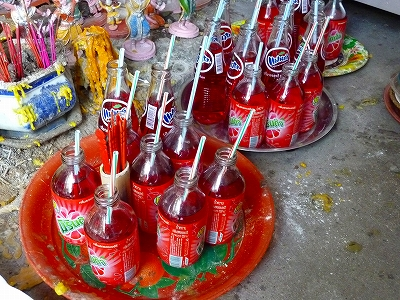
なぜか奉納されているのはミリンダの赤いジュース（グレープ味？）ばかりだった。
こちらはタイの神様
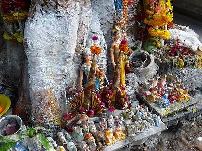
同じ形で色が何パターンかあるのでチョット戦隊ヒーローものっぽくて好き。
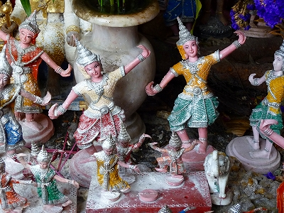
このタイオリジナルの信仰について知りたいのだが、中々良きテキストがなくて困ってます。
ご存知の方ご一報を。
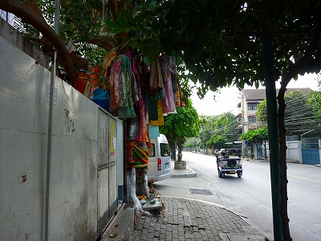
ごくごく普通のバンコクの日常風景の中に突然現れるドレスの成る木。
しかし通りがかりの人も特に珍しそうにはしていなかった。
てな感じで珍寺修行をはじめていこうか。
あ、そうだ。本屋、本屋。
次の修行へGO！
泰国珍寺修行 南へ
珍寺大道場 HOME